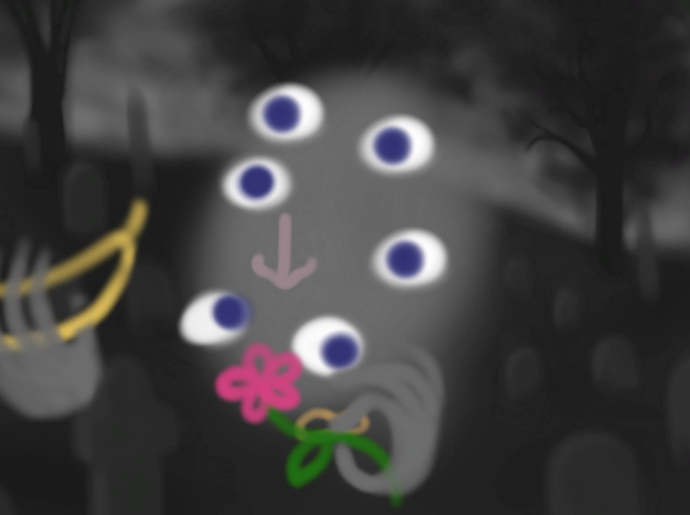
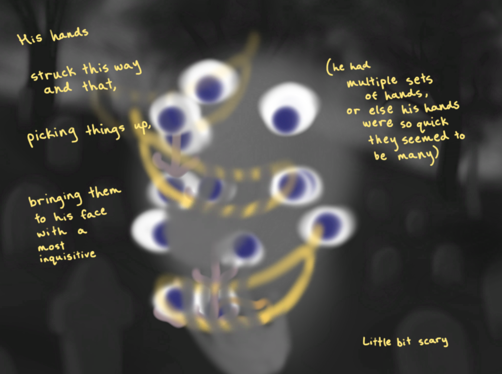

roger bevins iii
CS476A Final Project, Fall 2021 Miranda Li
This project is a tribute to roger bevins iii, a ghost in George Saunders' Lincoln in the Bardo. The book describes him as follows:
"Bevins" had several sets of eyes All darting to and fro Several noses All sniffing His hands (he had multiple sets of hands, or else his hands were so quick they seemed to be many) struck this way and that, picking things up, bringing them to his face with a most inquisitive Little bit scary In telling his story he had grown so many extra eyes and noses and hands that his body all but vanished Eyes like grapes on a vine Hands feeling the eyes Noses smelling the hands"
 
Mac executable here, .zipped project files here.
- press P to fade the preface (there is a 4 second lag between when you press P and when the preface disappears; I initially implemented the preface fading after 4 seconds automatically but I implemented this keypress to make it easier for me to record my final video. There's a version of the app where the preface fades automatically called FinalBuild in the .zipped archive).
- press E to add an eye
- press N to add a nose
- press M to add a mouth
- press H to summon a hand
- press W to summon a gust of wind
- press S for story
- press F for finale
Final project ideas
Bevins, a narrative
One idea for my final project is to expand upon my music sequencer. My idea here is to have a storyline, with multiple scenes, which describes the life and death of Roger Bevins, all in the same creepy, collage-y style of my music sequencer, but with more complexity -- I'm hoping to get into rigging different collaged parts together to produce "puppets" of Bevins, I want scene transitions, I want non-playable characters, etc.
Hand-drawn animation -- seamless dancing
Another idea I'm interested in is combining hand-drawn animation with Chunity. I'm thinking something along the lines of an infinite loop of a bunch of quirky characters dancing to a predetermined track, and when a key is pressed, at the next beat the track is changed or altered and a different set of frames is played, but the frames have been drawn so that the motion appears to be seamless, as though the whole thing is one long animated video. I hope this makes sense.
Tour of my plants
Lastly, I have an idea which involves photographing and reassembling my plants as 3D objects in unity with image textures. Each part will correspond to a noise, and the whole thing will be rigged so that touching one part of the plant influences all the others. This is inspired by me spending a lot of time staring at / playing with my plants -- I have noticed that plants are such delicate physical systems that usually perturbing one leaf will also perturn something else -- the leaf stalk, the stem, a neighboring leaf, etc. I like the idea of the audio for the corresponding pieces being distorted fittingly.
Milestone 1
Here's my minimum working prototype. I know it looks an awful lot like my music sequencer, but in fact I did do a bit of sneaky refactoring to prepare for the next phase, in which (I hope):
- everything will be animated
- the "face" blob will morph and change shape
- the features will pick a random direction to jostle in
- the hands will, upon instantiation, pick a random feature to move towards (as if bringing the object up to that feature for inspection)
- there will be a "story mode" in which a bit of (likely handwritten) text from the book is overlaid
- there will be ambient noise, and the samples I choose for the features will be less annoying
Onwards!
Milestone 2
Since the last milestone I've drawn a lot of animation frames :) Now everything wiggles! spooky